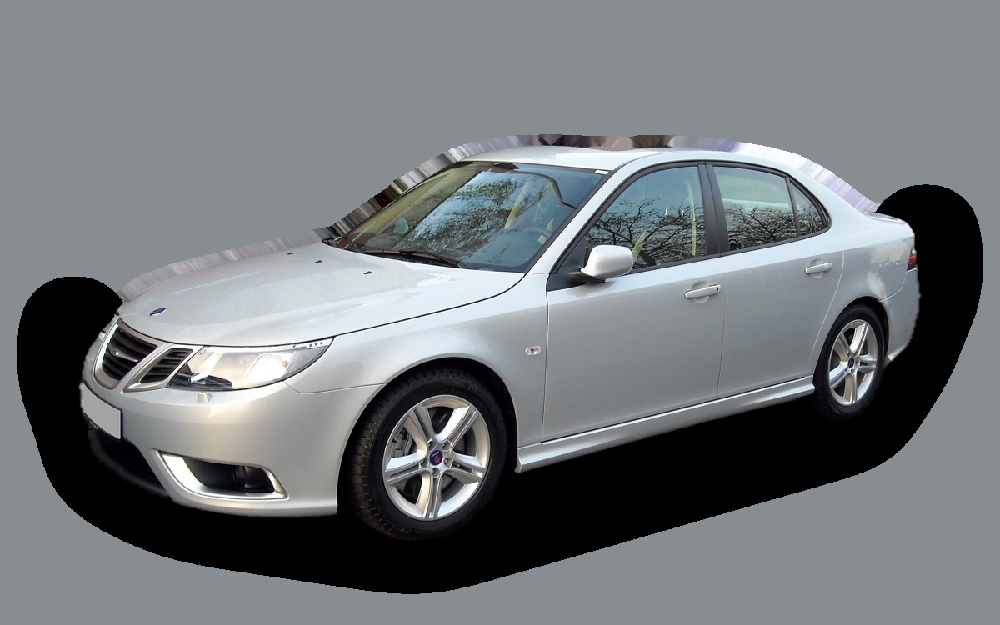
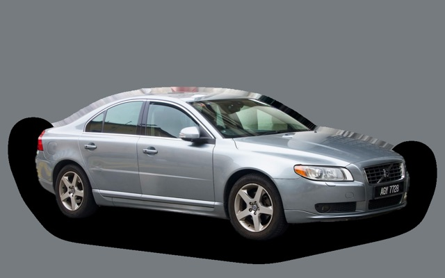
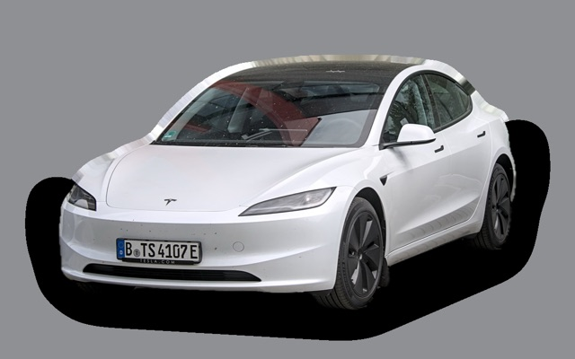
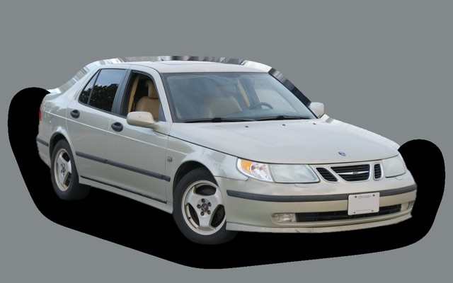

What does a Saab 9-3 Sport Sedan cost per month?
A 2008 Saab 9-3 Sport Sedan costs about SEK 3,482 a month, all in.
SEK 3,482per month, 2008 model
SEK 33,000price, 2008 model
SEK 239,900last new price
Evalue grade (2008)


Monthly cost by model year
| Model year | Version in the calculation | Price | Per month | Grade |
|---|---|---|---|---|
| 2011 | 1.8t 150, Linear | SEK 47,000 | SEK 3,647 | D |
| 2008 | 1.8t 150, Linear | SEK 33,000 | SEK 3,482 | E |
| 2005 | 1.8t 150, Linear | SEK 23,000 | SEK 3,324 | D |
Based on 5 years of ownership and 12,500 km a year, with fuel prices from 2026-10-22. The monthly cost includes depreciation, fuel, servicing and repairs, insurance and road tax.
How the cost splits for a 2008 car
- Depreciation: SEK 258/mo
- Fuel: SEK 1,777/mo
- Servicing and repairs: SEK 1,115/mo
- Insurance: SEK 157/mo
- Road tax: SEK 175/mo
Used prices in ads
| Model year | Median price | Ads | Typical mileage |
|---|---|---|---|
| 2011 | SEK 70,000 | 17 | 197,000 km |
| 2010 | SEK 65,000 | 35 | 200,000 km |
| 2009 | SEK 52,400 | 37 | 260,000 km |
| 2008 | SEK 46,000 | 62 | 208,000 km |
| 2007 | SEK 29,900 | 46 | 193,000 km |
| 2006 | SEK 27,700 | 106 | 248,000 km |
| 2005 | SEK 25,000 | 18 | 237,000 km |
The median price in Swedish ads by model year in October 2026 (source: Blocket, AutoUncle, BilKoll). Ad prices are asking prices, and the final price may be lower.
Engines and versions
| Engine | Fuel | Power | 0–100 km/h | Consumption (WLTP) | Range | Model years | Extra cost |
|---|---|---|---|---|---|---|---|
| 1.8t 150 | Petrol | 150 hp | 9.5 s | 8.2 l/100 km | – | 2005–2011 | – |
| 1.9 TiD 150 | Diesel | 150 hp | 9.5 s | 6.2 l/100 km | – | 2005–2011 | +SEK 2,000 |
| 2.8 V6 Turbo Aero 255 | Petrol | 255 hp | 6.9 s | 10.9 l/100 km | – | 2005–2011 | +SEK 108,000 |
- Trim: Linear, Vector (+SEK 20,000)
Facts
- Body
- Sedan
- Model years
- 2005–2011
- Last new price
- SEK 239,900
- Boot
- 425 litres
- Euro NCAP
- 5 of 5 stars
- New-car warranty
- 3 years
- Reliability
- 3 of 5
- Comprehensive insurance, estimate
- SEK 5,400/yr
- Servicing, estimate
- SEK 3,800/yr
Common faults to watch for
- Oil sludge and clogged oil pump pickup, repair about SEK 12,000
- Balance shaft chain and tensioner, repair about SEK 9,000
- Swirl flaps, EGR and intake manifold (1.9 TiD), repair about SEK 7,000
- Particulate filter (1.9 TiD), repair about SEK 9,000
- Timing chains (2.8 V6 Turbo), repair about SEK 30,000
- Steering column module (CIM) and lock, repair about SEK 5,000
The faults apply to some engines and model years. The calculator works out the risk for the exact version you choose.
Pros and cons
Pro
Classic Swedish sedan with good safety and a very low purchase price.
Con
The brand no longer exists, so some spare parts can be hard to find.
Similar cars
 Hyundai Ioniq 6SEK 3,504/mo as a 2023 model
Hyundai Ioniq 6SEK 3,504/mo as a 2023 model Volvo S60 IISEK 3,573/mo as a 2015 model
Volvo S60 IISEK 3,573/mo as a 2015 model
Volvo S80SEK 3,698/mo as a 2013 model Polestar 2SEK 3,241/mo as a 2023 model
Polestar 2SEK 3,241/mo as a 2023 model
Tesla Model 3SEK 3,192/mo as a 2023 model
Saab 9-5 SedanSEK 3,790/mo as a 2006 model
Updated 2026-10-27 · ad data Oct 2026